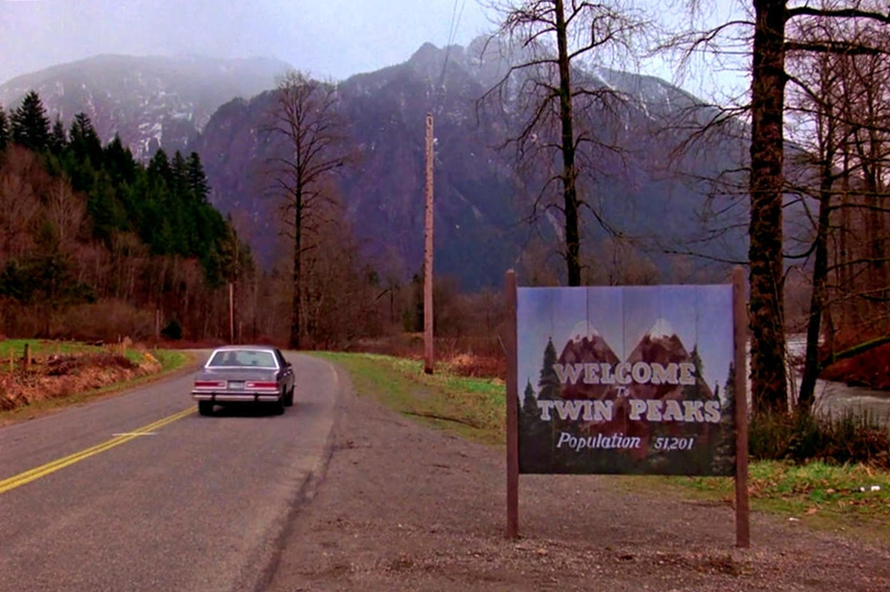
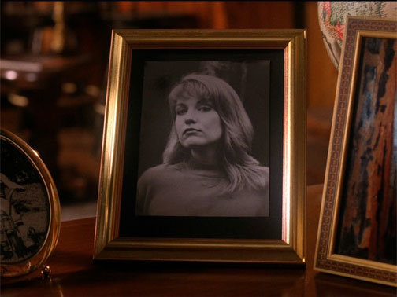
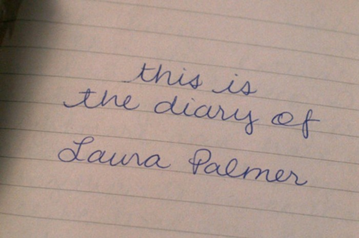
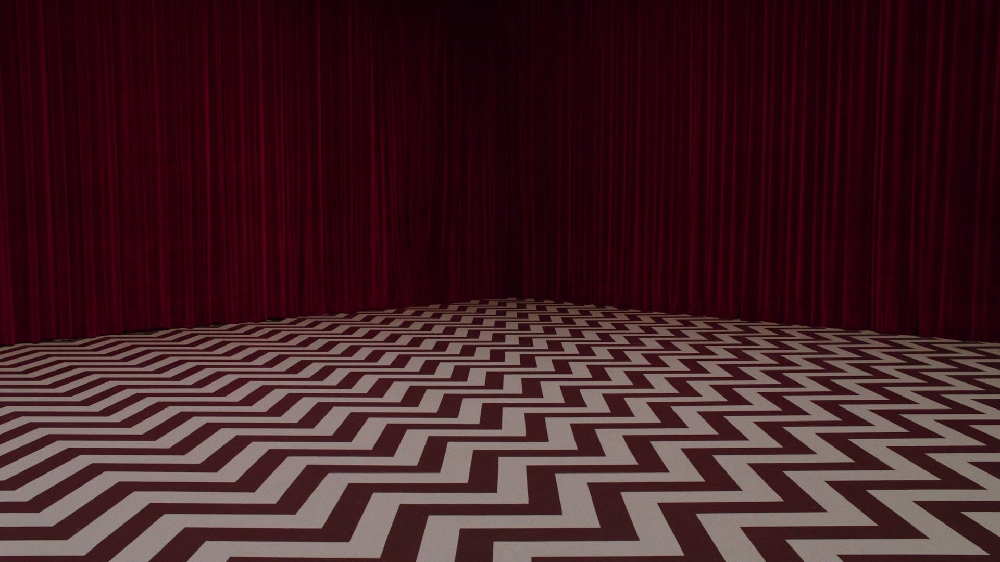
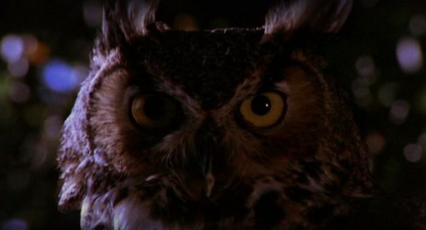
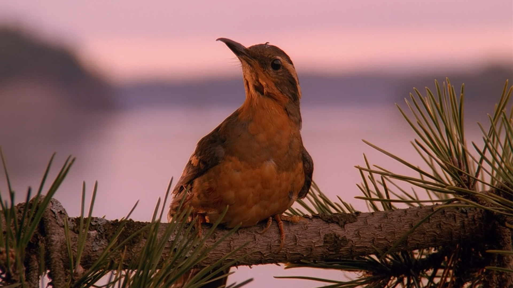

ABOUT
Twin Peaks is an American mystery horror drama television series created by Mark Frost and David Lynch that premiered on April 8, 1990, on ABC. Declining ratings led to its cancellation after its second season in 1991. It nonetheless gained a devoted cult following and has been referenced in a wide variety of media. In subsequent years, Twin Peaks is often listed among the greatest television series of all time, and is considered a landmark turning point in television drama.
The series follows an investigation headed by FBI Special Agent Dale Cooper (Kyle MacLachlan) and local Sheriff Harry S. Truman (Michael Ontkean) into the murder of homecoming queen Laura Palmer (Sheryl Lee) in the fictional suburban town of Twin Peaks, Washington. The show's narrative draws on elements of detective fiction, but its uncanny tone, supernatural elements, and campy, melodramatic portrayal of eccentric characters also draw on American soap opera and horror tropes. Like much of Lynch's work, it is distinguished by surrealism, offbeat humor, and distinctive cinematography. The acclaimed score was composed by Angelo Badalamenti with Lynch.
The success of the show sparked a media franchise, and the series was followed by a 1992 feature film, Twin Peaks: Fire Walk with Me, that serves as a prequel to the series. Additional tie-in books were also released. Following a hiatus of over 25 years, the show returned in 2017 with a third season on Showtime, marketed as Twin Peaks: The Return and Twin Peaks: A Limited Event Series. The season was directed by Lynch and written by Lynch and Frost, and starred many original cast members, including MacLachlan.
Read more here.
Short-answer question: In how many posters is Laura Palmer featured in?
STORYLINE

Season 1
In 1989, the logger Pete Martell discovers a naked corpse wrapped in plastic on the bank of a river outside the town of Twin Peaks, Washington. When Sheriff Harry S. Truman, his deputies, and Dr. Will Hayward arrive, the body is identified as homecoming queen Laura Palmer. A badly injured second girl, Ronette Pulaski, is discovered in a fugue state.
FBI Special Agent Dale Cooper is called in to investigate. Cooper's initial examination of Laura's body reveals a tiny typed letter "R" inserted under her fingernail. Cooper informs the community that Laura's death matches the signature of a killer who murdered another girl in southwestern Washington the previous year, and that evidence indicates the killer lives in Twin Peaks.
The authorities discover through Laura's diary that she has been living a double life. She was cheating on her boyfriend, football captain Bobby Briggs, with biker James Hurley, and prostituting herself with the help of truck driver Leo Johnson and drug dealer Jacques Renault. Laura was also addicted to cocaine, which she obtained by coercing Bobby into doing business with Jacques.
Laura's father, attorney Leland Palmer, suffers a nervous breakdown. Her best friend, Donna Hayward, begins a relationship with James. With the help of Laura's cousin Maddy Ferguson, Donna and James discover that Laura's psychiatrist, Dr. Lawrence Jacoby, was obsessed with Laura, but he is proven innocent of the murder.
Hotelier Ben Horne, the richest man in Twin Peaks, plans to destroy the town's lumber mill along with its owner Josie Packard, and murder his lover (Josie's sister-in-law), Catherine Martell (Piper Laurie), so that he can purchase the land at a reduced price and complete a development project, Ghostwood. Horne's sultry, troubled daughter, Audrey, becomes infatuated with Cooper and spies for clues in an effort to gain his affections.
Cooper has a dream in which he is approached by a one-armed otherworldly being who calls himself MIKE. MIKE says that Laura's murderer is a similar entity, Killer BOB, a feral, denim-clad man with long gray hair. Cooper finds himself decades older with Laura and a dwarf in a red business suit, who engages in coded dialogue with Cooper. The next morning, Cooper tells Truman that, if he can decipher the dream, he will know who killed Laura.
Cooper and the sheriff's department find the one-armed man from Cooper's dream, a traveling shoe salesman named Phillip Gerard. Gerard knows a Bob, the veterinarian who treats Renault's pet bird. Cooper interprets these events to mean that Renault is the murderer, and with Truman's help, tracks Renault to One-Eyed Jack's, a brothel owned by Horne across the border in Canada. He lures Jacques Renault back onto U.S. soil to arrest him, but Renault is shot while trying to escape and is hospitalized.
Leland, learning that Renault has been arrested, sneaks into the hospital and murders him. The same night, Horne orders Leo to burn down the lumber mill with Catherine trapped inside and has Leo gunned down by Hank Jennings to ensure Leo's silence. Cooper returns to his room following Jacques's arrest and is shot by a masked gunman.
Season 2
Lying hurt in his hotel room, Cooper has a vision in which a giant appears and reveals three clues: "There is a man in a smiling bag"; "The owls are not what they seem"; and "Without chemicals, he points." He takes Cooper's gold ring and explains that when Cooper understands the three premonitions, his ring will be returned.
Leo Johnson survives his shooting but is brain-damaged. Catherine Martell disappears, presumed killed in the mill fire. Leland Palmer, whose hair has turned white overnight, returns to work but behaves erratically. Cooper deduces that the "man in the smiling bag" is the corpse of Jacques Renault in a body bag.
MIKE is inhabiting the body of Phillip Gerard. His personality surfaces when Gerard forgoes the use of a certain drug. MIKE reveals that he and BOB once collaborated in killing humans and that BOB is similarly inhabiting a man in the town. Cooper and the sheriff's department use MIKE, in control of Gerard's body, to help find BOB ("without chemicals, he points").
Donna befriends an agoraphobic orchid grower named Harold Smith whom Laura entrusted with a second, secret diary she kept. Harold catches Donna and Maddy attempting to steal the diary from him and hangs himself in despair. Cooper and the sheriff's department take possession of Laura's secret diary, and learn that BOB, a friend of her father's, had been sexually abusing her since childhood and she used drugs to cope. They initially suspect that the killer is Ben Horne and arrest him, but Leland Palmer is revealed to viewers to be BOB's host when he brutally kills Maddy.
Cooper begins to doubt Horne's guilt, so he gathers all of his suspects in the belief that he will receive a sign to help him identify the killer. The Giant appears and confirms that Leland is BOB's host and Laura's and Maddy's killer, giving Cooper back his ring. Cooper and Truman take Leland into custody. In control of Leland's body, BOB admits to a string of murders, before forcing Leland to commit suicide. Leland, as he dies, is freed of BOB's influence and begs for forgiveness. BOB's spirit disappears into the woods in the form of an owl and the lawmen wonder if he will reappear.
Cooper is set to leave Twin Peaks when he is framed for drug trafficking by Jean Renault and is suspended from the FBI. Renault holds Cooper responsible for the death of his brothers, Jacques and Bernard. Jean Renault is killed in a shootout with police, and Cooper is cleared of all charges.
Windom Earle, Cooper's former mentor and FBI partner, escapes from a mental institution and comes to Twin Peaks. Cooper had previously been having an affair with Earle's wife, Caroline, while she was under his protection as a witness to a federal crime. Earle murdered Caroline and wounded Cooper. He now engages Cooper in a twisted game of chess during which Earle murders someone whenever a piece is captured.
Investigating BOB's origin and whereabouts with the help of Major Garland Briggs, Cooper learns of the existence of the White Lodge and the Black Lodge, two extra-dimensional realms whose entrances are somewhere in the woods surrounding Twin Peaks.
Catherine returns to town in yellowface, having survived the mill fire, and manipulates Ben Horne into signing the Ghostwood project over to her. Andrew Packard, Josie's husband, is revealed to be still alive while Josie Packard is revealed to be the person who shot Cooper at the end of the first season. Andrew forces Josie to confront his business rival and her tormentor from Hong Kong, the sinister Thomas Eckhardt. Josie kills Eckhardt, but she mysteriously dies when Truman and Cooper try to apprehend her.
Cooper falls in love with a new arrival in town, Annie Blackburn. Earle captures the brain-damaged Leo for use as a henchman and abandons his chess game with Cooper. When Annie wins the Miss Twin Peaks contest, Earle kidnaps her and takes her to the entrance to the Black Lodge, whose power he seeks to use for himself.
Through a series of clues Cooper discovers the entrance to the Black Lodge, which turns out to be the strange, red-curtained room from his dream. He is greeted by the Man From Another Place, the Giant, and Laura Palmer, who each give Cooper cryptic messages. Searching for Annie and Earle, Cooper encounters doppelgängers of various people, including Maddy Ferguson and Leland Palmer. Cooper finds Earle, who demands Cooper's soul in exchange for Annie's life. Cooper agrees but BOB appears and takes Earle's soul for himself. BOB then turns to Cooper, who is chased through the lodge by a doppelgänger of himself.
Outside the lodge, Andrew Packard, Pete Martell and Audrey Horne are caught in an explosion at a bank vault, a trap laid by the dead Eckhardt. Cooper and Annie reappear in the woods, both injured. Annie is taken to hospital but Cooper recovers in his room at the Great Northern Hotel. It becomes clear that the "Cooper" who emerged from the Lodge is in fact his doppelgänger, under BOB's control. He smashes his head into a bathroom mirror and laughs maniacally.
Season 3 // The Return
Set 25 years after the events of the original Twin Peaks, the season follows multiple storylines, many of which are linked to FBI Special Agent Dale Cooper (MacLachlan) and his original 1989 investigation into the murder of Twin Peaks homecoming queen Laura Palmer (Sheryl Lee). In addition to the fictional Washington State town of Twin Peaks, the story extends to locations such as Las Vegas, South Dakota, Philadelphia, and New Mexico. Showtime president David Nevins said that "the core of the plot is Agent Cooper's odyssey back to Twin Peaks"
CAST
MAIN CAST
- Kyle MacLachlan as Special Agent Dale Cooper, an FBI agent assigned to investigate the murder of Laura Palmer
- Michael Ontkean as Sheriff Harry S. Truman, the local sheriff
- Mädchen Amick as Shelly Johnson, a young diner waitress in an abusive marriage
- Dana Ashbrook as Bobby Briggs, Laura's boyfriend
- Richard Beymer as Benjamin Horne, a local businessman who owns the Great Northern Hotel
- Lara Flynn Boyle as Donna Hayward, Laura's best friend
- Sherilyn Fenn as Audrey Horne, Benjamin's daughter and classmate of Laura
- Warren Frost as Dr. Will Hayward, Donna's father and the town physician
- Peggy Lipton as Norma Jennings, owner of the Double R diner
- James Marshall as James Hurley, a classmate and friend of Laura and Donna
- Everett McGill as Ed Hurley, James' uncle and friend of Sheriff Truman
- Jack Nance as Pete Martell, husband of Catherine Martell
- Ray Wise as Leland Palmer, Laura's father and Horne's lawyer
- Joan Chen as Jocelyn "Josie" Packard, Catherine's sister-in-law and owner of the lucrative Twin Peaks mill
- Piper Laurie as Catherine Martell, Josie's sister-in-law and a businesswoman
- Kimmy Robertson as Lucy Moran, the sheriff station secretary
SECONDARY CAST
- Eric Da Re as Leo Johnson, Shelley's husband and a trucker who often runs into the law
- Harry Goaz as Deputy Sheriff Andy Brennan, a naive deputy
- Michael Horse as Deputy Sheriff Tommy "Hawk" Hill, an expert tracker
- Sheryl Lee as Laura Palmer and Madeline "Maddy" Ferguson, two identical cousins
- Russ Tamblyn as Dr. Lawrence Jacoby, the town psychiatrist
- Kenneth Welsh as Windom Earle, Agent Cooper's former partner at the Bureau
EPISODES
| Series | Season | Episodes | Original Run | |
|---|---|---|---|---|
| Premiere | Finale | |||
| Twin Peaks | 1 | 8 | April 8, 1990 | May 23, 1990 |
| 2 | 22 | September 30, 1990 | June 10, 1991 | |
| Twin Peaks (2017) | 18 | May 21, 2017 | September 3, 2017 | |
GALLERY
CHECK FOR A FREE WALLPAPER